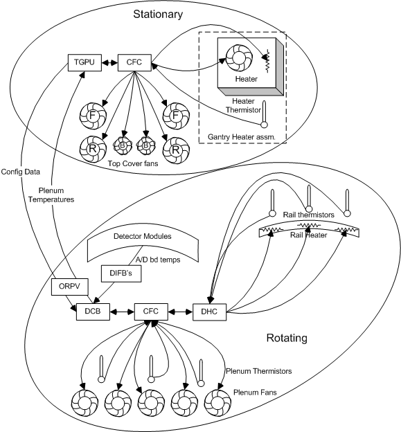
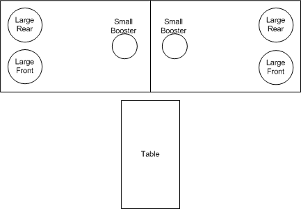

Operating Documentation
Direction 5193574-800, Rev# 22
LightSpeed 7.X Service Methods
Module Version 2.0, Version Date 10/28/08
Operating Documentation |
| Last Revised on: | October 13, 2008 |
To manage the gantry internal temperature, four control loops are used. These control loops include:
Detector Air Plenum fans
Detector Strip Heaters
Top cover fans
Inlet air heater
See Section 4 for control loop summary details.
The TGPU and DAS DCB boards coordinate the operation of these control loops to optimize the temperature at the Detector modules and rails.
The Gantry top cover fans and gantry heater are controlled by the TGPU via the stationary Common Fan Control (CFC) board.
The Plenum Fans are controlled by the DCB via the rotating side CFC.
The Detector rail heaters are controlled by the DHC using set points established by the DCB.
The CFC and DCB boards accept messages via an RS232 interface and control fans/heaters as required.
The CFC and Detector Heater Control (DHC) boards simply maintain the commanded value for fan speed or heater temperature. Changes to these values are calculated in the TGPU for the stationary side CFC and DCB for the rotating side CFC and DHC.
The TGPU sends configuration information to the DCB. The DCB then provides configuration, and control information to the rotating side CFC and DHC. By using variable-speed fans in the Detector plenum, the VCT system mitigates the effects of the change in air temperature in the plenum, fan efficiency, system resistance and air density on the detector modules. The top cover fans are also variable speed to regulate and minimize variation in the gantry air temperature.
See Section 5 for CFC and Section 6 for DHC board specific theory.
| NOTE: | This theory document is the same for different system types. The ORP is called by a couple names depending on system type (ORP, ORPV, SCORP) but all refer to the same functional operation of the On-board Rotating Processor (ORP). |
Illustration 1: Gantry Thermal block diagram

The Gantry contains 6 exhaust fans on the top covers, one gantry heater and a blower for controlling flow over the gantry heater. There is a temperature sensor on the gantry heater exhaust.
The detector has 5 fans and 3 temperature sensors in the plenum, 3 rail heaters, 3 rail temperature sensors, and several temperature sensors in each Field Replaceable Detector Module (FRDM). Access to all of these devices except for the detector module temperature sensors is via a CFC board. The detector rail heaters and rail thermal sensor are additionally connected to the DHC board.
The gantry stationary thermal devices are controlled by the thermal manager task on the TGPU. The TGPU reads and sends commands to the stationary side CFC. The TGPU gets temperature readings from the Detector plenum thermistors. The path from the plenum thermistors to the TGPU is shown in Illustration 1.
There is an alarm monitor function on the TGPU that is executed every 10 seconds unless the CFC is off line. It reads the alarm status register of the CFC and reports any error. If the CFC is offline it is executed every 60 seconds and only checks to see if the CFC is re-connected.
The gantry heater blower fan is always on at a constant speed. The duty cycle of the heater determines the temperature output. The thermal manager in the TGPU uses configuration file parameters to determine the behavior of the gantry heater. The TGPU checks the heater temperature at a rate determined by a configuration entry. The TGPU checks for the following conditions:
If the temperature is below the configured Setpoint the TGPU enables the heater.
If the temperature is above the configured Setpoint the TGPU disables the heater.
The TGPU will disable the heater if an error in the thermal sensor is detected.
The CFC receives on/off commands from the TGPU based on inlet air temperature feedback supplied to the CFC via a thermistor probe that will pass the information through the CFC to the TGPU via RS232 communication. The CFC then controls the solid state relay (SSR) on the gantry heater assembly to turn the heater on/off.
The thermal manager task on the TGPU sends a message to the DCB through the ORPV requesting plenum temperatures. The plenum temperature data returned is sent through a digital filter on the TGPU with the results then averaged together. The filtered average is used to determine the fan speeds for the gantry fans. The fans are grouped in pairs for control speeds. The groupings are the front fans, the rear fans and small booster fans (see Illustration 2).
Illustration 2: Gantry Fan Locations

Each pair is controlled separately. The appropriate fan speed is determined through a lookup table of the filtered averaged plenum temperature. The determined fan speed is sent to the CFC board that then sends a command voltage to the fans. The CFC compares the commanded speed to the fan tach speed and adjusts the command voltage to set the fans at the requested speed.
The front fans will be stopped unless the plenum temperature reaches 30C. it will then start at 35% speed and ramp to 90% speed as the plenum temperature goes to 35C.
The rear fans only stop if the plenum temperature goes below 24C. Between 24 and 35 C the speed changes between 35% and 90%. Note that the heater control tries to keep the plenum in the range of 30C +/- 5C, so it is unlikely that the rear fans will ever actually stop.
The booster fans will never stop spinning. Between 22 and 35 C the speed will vary between 35% and 65%.
The primary duties of the rotating side thermal manager task are to control the Plenum fans and rail heaters. It also monitors for failed devices via the CFC and DHC and provides temperature information to the stationary side.
The Thermal manager task runs on the DCB and communicates directly to the CFC and indirectly to the DHC through the CFC.
The DCB must provide thermal information to the stationary side. To minimize the timing impacts to the system, the thermal manager task will divide up the thermal data read into 3 stages. Stage 0 reads the plenum thermal sensors. Stage 1 reads the rail thermal sensors. Stage 2 reads the actual plenum fan speeds. The data is put into the thermal data cache to be sent out every 10 seconds.
The rotating side thermal manager checks the alarm status of the CFC and DHC boards. If there are alarms appropriate errors are logged. If the CFC or DHC is offline the thermal manager will periodically check to see when they are now online. If the CFC has gone from offline to online the thermal manager will call the configure utility to download configuration data to the CFC and/or DHC. The alarm monitor will execute every 10 seconds under normal conditions. It will run once every 60 seconds if the CFC or DHC goes offline.
Plenum fan control executes as part of the thermal manager task. The plenum fans are used to control detector module ASIC temperatures. The average temperature of several modules are read in and used as feedback to a proportional integral derivative (PID) loop for control of the plenum fans. The modules used are configurable. Default detector modules used are the center 3 (28,29,30). The plenum temperature sensors are used to determine the set point for the PID loop. In a process quite similar to the stationary side the plenum temperatures are read in, digitally filtered, averaged, then fed through a look up table (LUT) to determine the set point for the PID loop.
Configuration data is sent to the DCB from the TGPU via the ORPV (or SCORP). The CFC and DHC must be configured when they first come on line. Data from the configuration message is sent by the DCB to initialize the CFC and DHC. The CFC and DHC are not considered as online until the configuration data is available.
A legacy interface is maintained to inhibit system calibration if the detector temperature is not stable. This function uses the same interface as the GDAS DHCB based Thermal Manager.
Rail heater control is handled almost completely autonomously by the DHC. The DCB only sets the desired temperature via the CFC at power up. The DCB communicates to the CFC via an RS232 interface that then sends information to the DHC. All communications between the DHC and DCB go through the CFC. The detector rail temperature is maintained at 38 degrees C for VDAS 64. For VDAS 32, HDAS64 and HD_HDAS64 the rail temperature is 36 degrees C.
DCB requests Field Replaceable Detector Module (FRDM) A/D board temperatures from the DIFB’s.
DIFB’s supply FRDM A/D board temperatures to the DCB.
DCB tells the Rotating CFC (RCFC) to change Fan Speed to a new supplied speed.
RCFC checks fans tach and adjusts voltage to achieve and maintain the new speed.
RCFC reports any Fan errors to the DCB.
DHC receives detector temperature set point from DCB via RCFC.
DHC monitors detector zone thermistors and turns heaters on or off to maintain detector rail temperature.
DCB requests temperature data from DHC via RCFC for reporting on request.
TGPU requests temperature data from the DCB via the ORPV.
DCB requests temperature data from RCFC.
RCFC reads Plenum temp thermistors and passes it to DCB.
DCB sends the filtered average of 3 sensors for the Plenum Temp data to the TGPU via ORPV (or SCORP).
TGPU informs the Stationary CFC (SCFC) to change Fan speeds to a new supplied speed.
SCFC checks fans tach and adjusts voltage to achieve and maintain the new speed.
SCFC reports any Fan errors to the TGPU.
TGPU requests the Gantry heater assembly output temperature from the SCFC.
SCFC reads gantry blower output temperature thermistor and reports it to the TGPU.
TGPU determines from heater assembly thermistor data to turn heater on/off.
TGPU informs the SCFC to turn the gantry heater (blower box) on/off.
SCFC controls an SSR on the gantry heater assembly to turn heater on/off.
All fans will run at 1/2 speed, the gantry heater will be in the “Off” state, and the board will be ready for communication. The amber Default Mode LED will be lit. The CFC will stay in this state until a control communication is received and the hardware watchdog circuit is enabled.
A “watchdog” function exists in hardware that will set and hold the board in “Default Mode” within 1 second on power up. The CPU, once initialized will write to the watchdog register continuously, which will allow variable fan speed and heater control. If the CPU does not continuously refresh watchdog within 1.5 minutes, the board will enter the Default Mode with the heater disabled, and the fans set at ½ speed via hardware without any firmware interaction. The system is able to determine that the hardware watchdog failed and will post a message to the error log.
Detect and report open thermistors
Detect and report shorted thermistors
Detect and report Stationary Heater over-temp (open circuit when it should be closed)
Memory Checksum or CRC check
The diagnostic self test will run on power on and also during regular operation at regular intervals timed at 1.15 seconds between tests. Test results will be communicated on request by firmware. This method allows firmware to query diagnostic results multiple times at multiple gantry positions while rotating. This will simplify diagnosis of rotation-related intermittent problems.
The CFC will monitor the 48V input at an accuracy of ±500mV and store the information in memory to be read by the host for diagnostic reporting. If the voltage goes below 45V an error will be reported.
Test points and LEDs can only be seen after opening covers for the CFC assemblies. If the fans controlled by each CFC board are running, then the board has power and is alive.
Table 1: LEDs
| Label | Color | Description |
| D27 | Green | 48V+ |
| D18 | Green | Heartbeat (blinking) |
Table 2: Test Points
| Label | Description |
| +12V | 12V on board power |
| +5V | 5V on board power |
| 48V+ | 48V incoming power |
| AGND 1-3 | Analog grounds |
The detector heater controller is designed to maintain the detector rails at a uniform temperature of 38 degrees Celsius for 64 slice VDAS and 36 degrees Celsius for 32 slice VDAS, 64 slice HDAS, and 64 slice HD_HDAS. This is critical for controlling the photodiode ouput stability and preventing any changes to the rail temperature profile. Changes in the rail temperature or the temperature profile can both lead to IQ errors due to poor diode temperature control. In order to prevent EMI issues, the heater controller provides a constant filtered DC voltage to the rail heater zones. All PWM chopping of the input voltage is done within the controller. Also the communication of the temperature measurements of the rails will be done to CFC via the RS232 protocol.
Upon POWER ON, all heaters will start heating the detector and measurement will be made constantly by the DHC at every 1 seconds. The default value of the target heater set point will be 38C. Firmware override capability will be present for changing the set point, but reset of the system will set the heaters back to 38C. Also there is a timeout feature of DHC with firmware in case that the DHC stops communication (type of watch-dog). This will be important to prevent damage to heaters in case DHC is faulty.
Detect and report open thermistors - In case of detecting open thermistor, the HEATER ZONE associated with the open thermistor will be SWITCHED OFF till the problem is solved (Power off). This will be reported to the error log.
Detect and report shorted thermistors - In case of detecting an shorted thermistor, the HEATER ZONE associated with the shorted thermistor will be SWITCHED OFF till the problem is solved (Power off). This will be reported to the error log.
Detect and report disconnected heaters, also reported to the error log.
Detect and display open thermostat switch. This will happen in cases when none of the 3 heater zones are heating.
Memory Checksum or CRC check (DCB Flag request)
The diagnostic self-test will run on POWER ON and also during regular operation at regular intervals timed at 1 second between tests. Test results will be communicated to the DCB on request. This method will allow the DCB to query diagnostic results multiple times at multiple gantry positions while rotating.
A watchdog function exists in the hardware that will set and hold the board in “Default Mode”. Within 1 second of power up.
The DHC will monitor the 48V input at an accuracy of +/- 50mV and store the information to be read by the host for diagnostic reporting. If the voltage goes below 45V an error will be reported.
Table 3: LEDs
| Label | Color | Description |
| Power | Green | 48V incoming power |
| Zone 1 | Orange-ON, Yellow-BAD | Heater zone 1 (not used) |
| Zone 2 | Orange-ON, Yellow-BAD | Heater zone 2 (low channel end) |
| Zone 3 | Orange-ON, Yellow-BAD | Heater zone 3 (center zone) |
| Zone 4 | Orange-ON, Yellow-BAD | Heater zone 4 (high channel end) |
| Zone 5 | Orange-ON, Yellow-BAD | Heater zone 5 (not used) |
Table 4: Test Points
| Label | Description |
| +12V | 12V on board power |
| +5V | 5V on board power |
| 48V+ | 48V incoming power |
| AGND 1-4 | Analog grounds |
Table 5: Fuses
| Label | Description |
| F1 | 125V 10A Slow blow, input power |
| F4 | 125V 5A Slow blow, Heater zone |
| F5 | 125V 2.5A Slow blow, Heater zone |
| F6 | 125V 2.5A Slow blow, Heater zone |
| F7 | 125V 2.5A Slow blow, Heater zone |
| F8 | 125V 2.5A Slow blow, Heater zone |